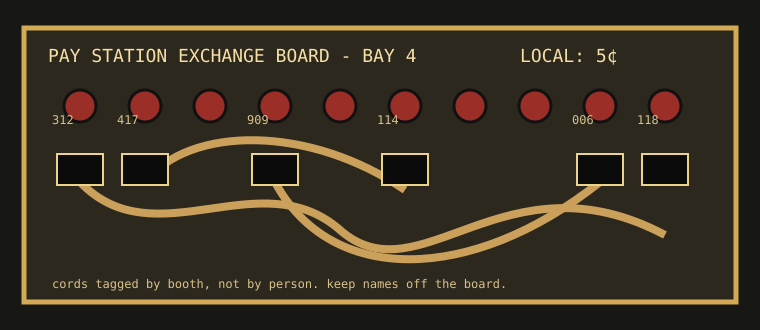

A small archive of public telephones as civic furniture: tariff slips, operator shorthand, calling-card plastic, and the private handwriting people left in booths while trying to sound steady.

Bay 4 service board, redrawn from an undated maintenance card. Booth numbers are station numbers, not addresses.
Operator cord logSequence notes from a night operator: station rings, coin tone checks, emergency interrupt marks.
Collection rule: no full private numbers are preserved unless they already belong to fictional exchange blocks. The interesting part is the infrastructure, not doxxing ghosts.